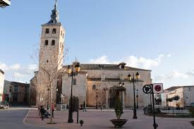

En un lugar de la Mancha.....Lillo (Toledo)
Su nombre procede del latin "Liliun" que significa "Lirio", por encontrarse en las cercanías una zona encharcada, donde crecen muchos lirios.
En la Edad Media perteneció a la corona para pasar luego a la Orden de Malta y más tarde al arzobispado de Toledo.
Perteneció administrativamente a La Guardia hasta 1430, año en el que alcanzó el título de villa por orden del prelado toledano Juan Martínez de Contreras. Pedro López de Ayala, cuarto conde de Fuensalida, compró la población en 1584.
A mediados del siglo XIX tenía 586 casas y el presupuesto municipal ascendía a 33.423 reales de los cuales 5.500 eran para pagar al secretario. En 1885 sufrió una epidemia de cólera (véase:Pandemias de cólera en España).
Se han encontrado restos arqueológicos que datan de la época romana
